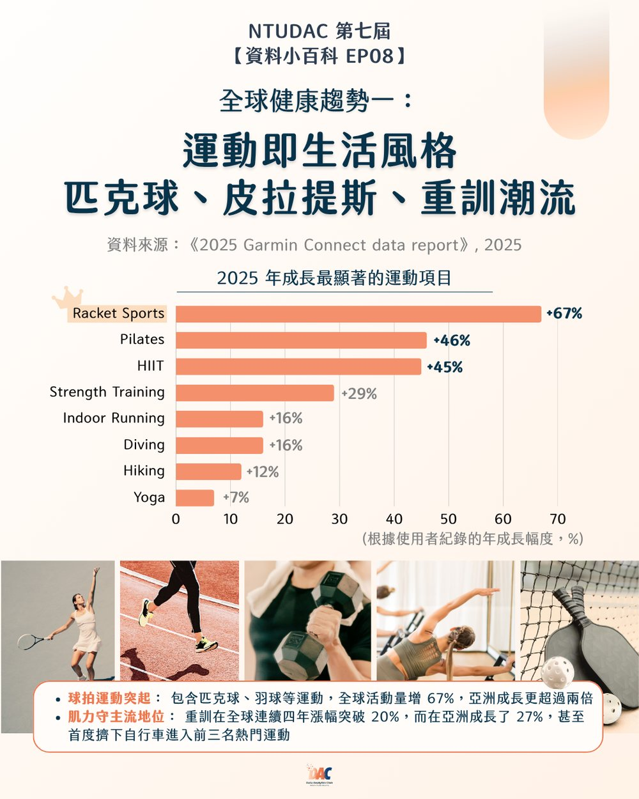
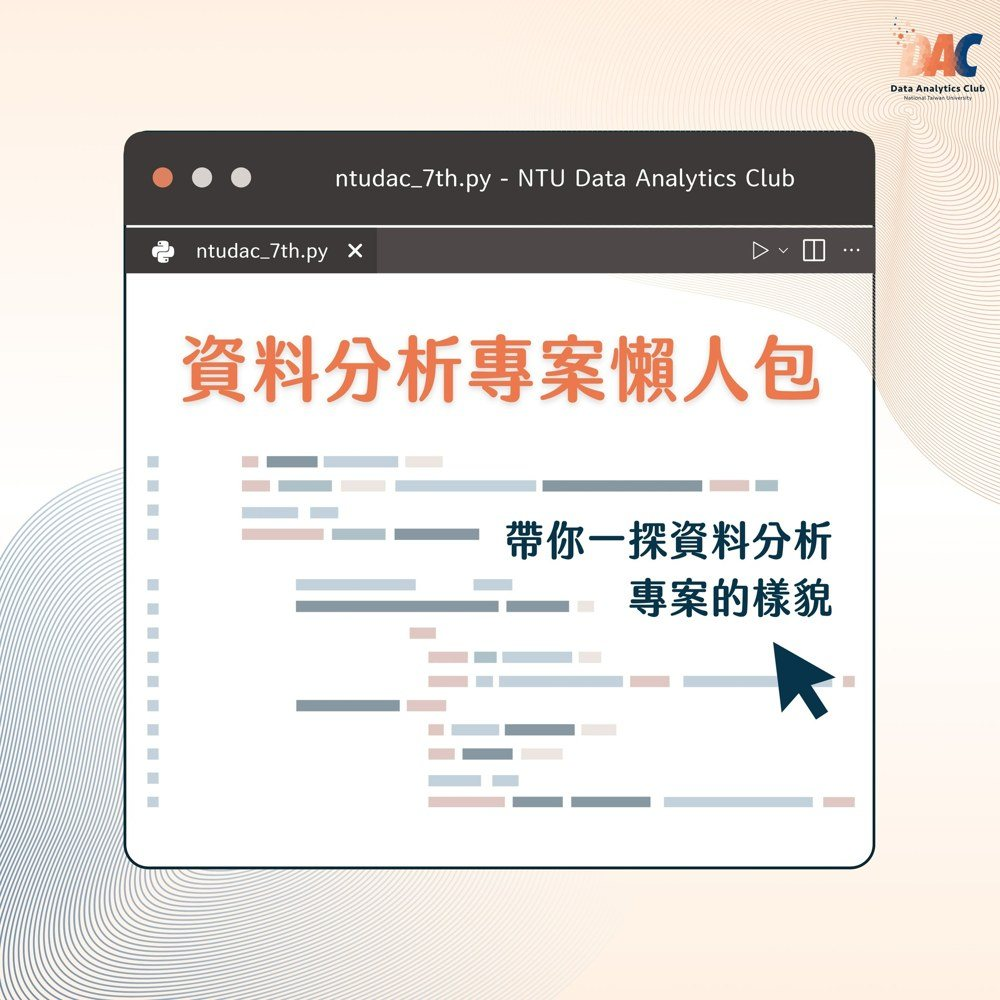
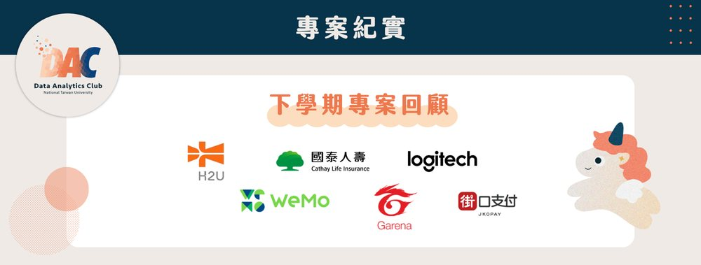

- A 6-member teamMarketing and PR across Facebook, Instagram, Medium, LinkedIn, Threads and a podcast
- A content playbookA fix for each gap: weak brand identity, low interaction, partner projects nobody saw
- Two recruitment campaignsMembers (7th cohort) and officers (8th cohort), with free guides to keep people engaged
- Corporate visitsUnilever · Deloitte · SinoPac · Shopee · Hotai
Results
Facebook · InstagramGrowth came from carousels and recruitment posts
Before I took over, the pages had a weak identity, low interaction and partner projects nobody saw. My team gave every channel one job and launched three content plays.
Content playbook
Gaps I spotted before taking over, each answered by a content format that shipped. Click a post to enlarge it.
Weak brand identity
One recognizable look: a consistent palette and a monthly data-chart series tied to the news

Low interaction
Give followers a reason to act: comment to get a free guide, sent automatically by a chatbot; giveaways and event Reels

Partner projects nobody saw
Turn every partner project into a public recap, cleared by the client before posting

What I brought
My role: lead a 6-member team that turned the club’s channels into a data-storytelling brand.
Give every channel one clear job, then let the numbers decide what to post more of.